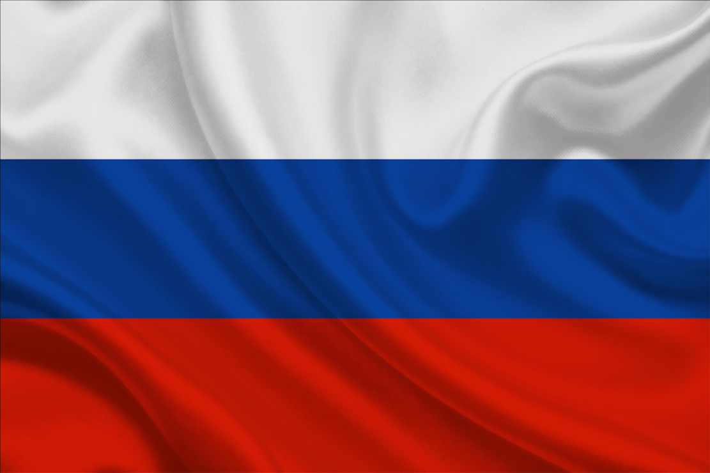
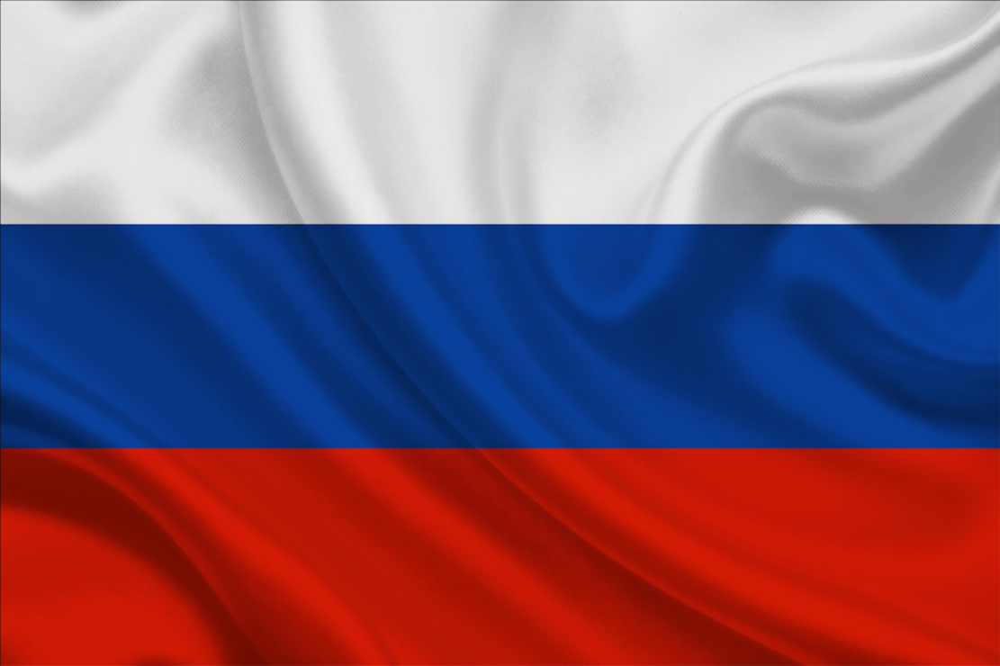

Resumo sobre a Tríplice Aliança
- A Tríplice Aliança era um acordo que estabelecia uma aliança militar entre Alemanha, Áustria-Hungria e Itália.
- O acordo foi assinado em 20 de maio de 1882, considerado uma evolução da Aliança Dual, existente entre Alemanha e Áustria-Hungria.
- Os objetivos principais desse pacto era isolar franceses e russos e impedir uma nova guerra na Europa.
- A partir da década de 1890, a política externa alemã tornou-se mais agressiva, o que incentivou a formação da Tríplice Entente, formada por Rússia, França e Grã-Bretanha.
- Em 1914, a Itália foi convocada para aderir à Entente, e as negociações fizeram com que ela abandonasse a Tríplice Aliança no ano seguinte.
O que foi a Tríplice Aliança?
Tríplice Aliança é o nome pelo qual conhecemos um tratado assinado entre Alemanha, Áustria-Hungria e Itália em 20 de maio de 1882. Esse tratado correspondia a um acordo militar entre as nações e foi renovado periodicamente até sua expiração, em 1915. Foi considerado uma expansão da Aliança Dual, a aliança que existia entre Alemanha e Áustria-Hungria desde 1879.
Um dos objetivos desse acordo era combater a influência de Rússia e França na Europa, países que eram rivais das três nações que faziam parte da Tríplice Aliança. A assinatura do tratado que unia as três nações era de conhecimento público, embora as cláusulas que o formavam fossem mantidas secretas.
Outro objetivo era impedir o crescimento da rivalidade na Europa e prevenir que o continente entrasse em guerra. Entretanto, o efeito desses acordos foi o contrário, pois eles contribuíram para o acirramento das relações e o eventual início da guerra em 1914.
Por meio desse pacto, os três países integrantes da Tríplice Aliança se comprometiam a fornecer cooperação mútua caso fossem atacados por alguma potência europeia. O governo alemão e o austríaco se comprometeram a auxiliar os italianos caso a Itália fosse atacada pela França sem nenhum tipo de provocação que justificasse uma guerra.
O governo italiano também garantiu que permaneceria neutro caso a Áustria-Hungria entrasse em guerra com a Rússia. Isso era uma garantia importante, pois permitia à Áustria-Hungria retirar tropas da fronteira de seu território com a Itália para sustentar um conflito contra os russos.
Ademais, o governo italiano recebeu uma promessa do governo alemão de que teria apoio nas exigências que os italianos faziam sobre obter possíveis colônias no norte da África. Em troca, o governo italiano assegurou que manteria relações amigáveis com o governo alemão. Por fim, o governo austríaco aceitou superar a rivalidade que tinha com a Itália por conta das disputas de fronteiras existentes entre as duas nações.
Objetivo da Tríplice Aliança
A Tríplice Aliança foi uma coalizão militar formada em 1882 pela Alemanha, Áustria-Hungria e Itália. O principal objetivo desse pacto era garantir apoio mútuo entre os países em caso de guerra e preservar o equilíbrio de poder na Europa, que estava cada vez mais instável no final do século XIX.
Para a Alemanha, liderada por Otto von Bismarck, a aliança era uma forma de manter a França isolada diplomaticamente e evitar guerras em duas frentes. Já a Áustria-Hungria queria apoio contra possíveis conflitos com a Rússia e controlar movimentos nacionalistas nos Bálcãs. A Itália, por sua vez, buscava segurança e reconhecimento como potência, além de interesses territoriais, mesmo que tivesse rivalidades com a própria Áustria-Hungria.
- Assim, os objetivos centrais da Tríplice Aliança eram:
- Garantir proteção mútua em caso de ataques militares, especialmente contra a França e a Rússia.
- Preservar a influência política e territorial de cada membro dentro da Europa.
- Manter a estabilidade interna e conter o avanço de movimentos nacionalistas, principalmente nos impérios multinacionais como o austro-húngaro.
Resumo sobre a Tríplice Entente
- A Tríplice Entente foi uma aliança militar entre a França, o Império Russo e o Reino Unido, estabelecida entre 1907 e 1917.
- Foi construída com base em três alianças bilaterais: a Entente Dual, entre França e Rússia; a Entente Cordiale, entre França e Inglaterra; a Entente Anglo-Russa, formada em 1907 e que uniu Reino Unido e Rússia.
- Tinha por objetivo estabelecer políticas externas de contenção ao avanço alemão na Europa e Ásia por meio de alianças comerciais, militares e políticas entre seus membros.
- Inicialmente, era formada por três países: Reino Unido, França e Império Russo.
- Foi fundamental para a Primeira Guerra Mundial, pois seus países-membros formaram os Aliados, que combateram a Tríplice Aliança na guerra.
- A principal diferença entre a Tríplice Entente e a Tríplice Aliança é que a Entente não consistia em uma aliança militar de defesa mútua obrigatória.
O que foi a Tríplice Entente?
A Tríplice Entente foi uma aliança militar entre a França, governada pela Terceira República, o Império Russo e o Reino Unido, estabelecida em 1907 e que perdurou até 1917.
Ela foi construída com base em outras três alianças bilaterais:
- A Entente Dual, entre França e Rússia, firmada a partir de 1894 como resposta ao avanço da Tríplice Aliança e como forma de cooperação econômica, industrial e militar entre os dois países;
- A Entente Cordiale, formada entre França e Inglaterra a partir de 1904 e que pacificou conflitos entre as duas nações em territórios coloniais e as fortaleceu como oposição à Alemanha;
- E a Entente Anglo-Russa, formada em 1907 e que uniu Reino Unido e Rússia contra os desejos alemães de construir a ferrovia Berlim-Bagdá, que aliaria o Império Turco Otomano ao Império Alemão.
Com o início da Primeira Guerra Mundial (1914-1918), os membros da Tríplice Entente se juntaram aos Aliados, declarando guerra aos Impérios Centrais, membros da Tríplice Aliança.
Objetivo da Tríplice Entente
Inicialmente, a Tríplice Entente tinha por objetivo estabelecer políticas externas de contenção ao avanço alemão na Europa e Ásia por meio de alianças comerciais, militares e políticas entre seus membros. Conforme se iniciou o desenvolvimento da Primeira Guerra Mundial, a Entente evoluiu para o bloco militar chamado de Aliados, que liderou a oposição aos Impérios Centrais (Tríplice Aliança) e os combateu na guerra. Nesse contexto, então, o objetivo da Entente era derrotar a Tríplice Aliança na guerra.
Quais países formavam a Tríplice Entente?
Inicialmente, a Tríplice Entente era formada por três países: Reino Unido, França e Império Russo. Com o início da Primeira Guerra Mundial e a formação dos Aliados, porém, seus membros se ampliaram, recebendo a adesão do Império Japonês; Itália; Reino da Sérvia; Bélgica; Grécia; Montenegro; estados árabes muçulmanos como o Sultanado Beda, Emirado de Asir, e Emirado de Nejd e Hasa (todos atualmente parte da Arábia Saudita); Romênia; Estados Unidos da América; e Brasil.


 

Diferenças entre a Tríplice Entente e a Tríplice Aliança
A principal diferença entre a Tríplice Entente e a Tríplice Aliança é que a Entente não consistia em uma aliança militar de defesa mútua obrigatória. Isso significa que o que unia os países-membros era sua rivalidade com a Alemanha e ações militares conjuntas para impedir o avanço industrial, bélico e político alemão.
No entanto, caso um dos países da Entente sofresse um ataque ou uma declaração de guerra ou uma convulsão interna, os demais não estariam obrigados a apoiá-lo. Um exemplo disso foi a recusa francesa e britânica em conceder asilo político à família do czar Nicolau II quando teve início a Revolução Russa de fevereiro de 1917.
Esse elemento foi destacado pelo ministro das relações exteriores britânico Eyre Crowe (1864-1925), atuante na época, como registrou o pesquisador K. A. Hamilton, no artigo “Grã-bretanha e França, 1911-1914”, publicado na obra British foreign policy under sir Edward Grey, pela Cambrigde University Press, em 1977: diante de um artigo de 31 de janeiro de 1911, publicado no jornal parisiense Le Temps, o qual contrastou a agressividade da Tríplice Aliança com a inatividade da Entente, Crowe explicou que, fundamentalmente,a Entente não era uma aliança, mas uma mentalidade comum, uma visão geral de política externa antialemã.